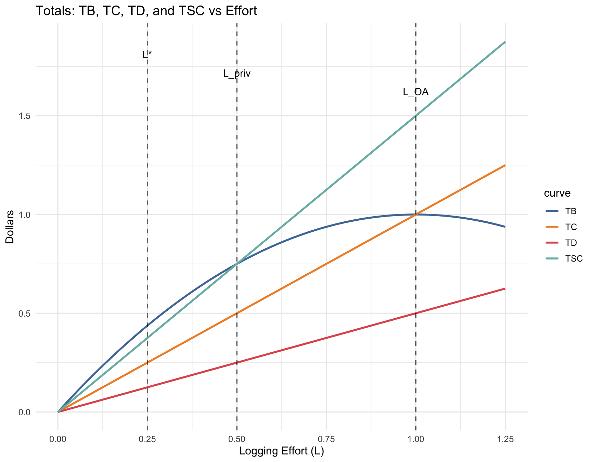
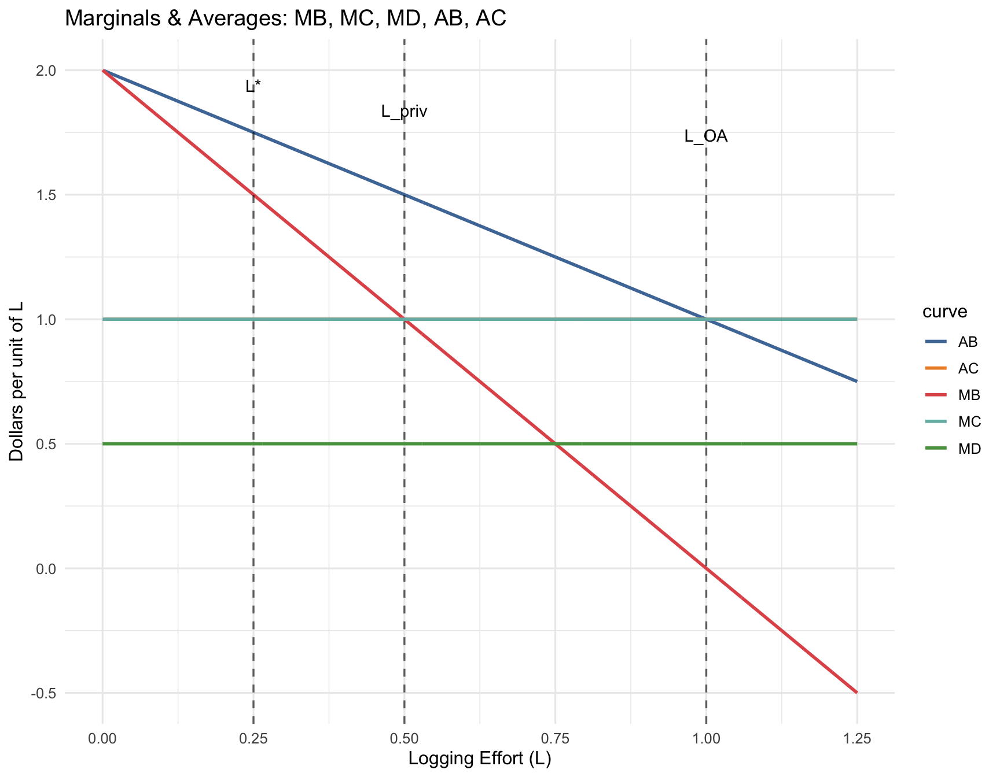

Homework 2
Externalities; Common Pool Resources; Public Goods
Homework Instructions
No Generative AI: You are not allowed to use generative AI tools for Homework Assignment 1, except for part d2 in Question 1
Deadlines: Wednesday, October 8, 2025 at 10:30 A.M.
- Hand in your written answers on paper to Prof. Choe at the beginning of class.
Question 1. Optimal Logging, Externalities, and REDD+ (Points: 50)
A forest jurisdiction evaluates logging activity \(L\) under two private market components and one external cost:
- Timber benefit (private): \(TB(L)=2L - L^{2}\)
- Harvesting cost (private): \(TC(L)=L\)
- Carbon damage (external): \(TD(L)=\delta\,L\), where \(\delta = 0.5>0\) is the monetized climate damage per unit of logging effort \(L\).
Here, \(L\) is logging effort (e.g., worker-days). Private loggers ignore \(TD\).
Notes:
- \(MB(L)=\frac{dTB}{dL}=2-2L\)
- \(MC(L)=\frac{dTC}{dL}=1\)
- \(AB(L)=TB/L=2-L\) (for \(L>0\))
- \(AC(L)=TC/L=1\) (for \(L>0\))
- \(MD(L)=\frac{dTD}{dL}=\delta=0.5\)
a — Total Curves (Top Panel)
Plot TB, TC, TD, and Total Social Cost \(TSC(L)=TC(L)+TD(L)\) versus \(L\).
b — Marginal Curves (Bottom Panel)
Plot marginals:
- \(MB(L)=2-2L\)
- \(MC(L)=1\)
- \(MD(L)=\delta=0.5\) (External Marginal Cost)
Also plot averages:
- \(AB(L)=2-L\)
- \(AC(L)=1\)
c — Benchmarks (align vertical guide lines across panels)
For each benchmark below, (i) denote private optimum \(L^{priv}\), socially efficient optimum \(L^{*}\), and open-access level \(L_{OA}\), (ii) write the condition to solve each, and (iii) compute the numeric value for each using \(\delta=0.5\).
Then draw vertical guide lines at the three effort levels on both panels so they align.
- Private optimum \(L^{priv}\) — Privately optimal with no externality considered.
- Definition: A single logging firm (a private decision-maker with exclusive rights to the forest) maximizing their own net private benefit, ignoring the external damage.
- Socially efficient optimum \(L^{*}\) — Maximizes total net social benefit (accounts for the external damage).
- Definition: Chosen to internalize the carbon damage at the margin.
- Open-access level \(L_{OA}\) — Free entry expands effort until profit is zero, ignoring externalities.
- Definition: With many competing loggers, free entry expands effort until each logger earns zero economic profit and all resource rents are dissipated.
Show answer

d — What is REDD+ and how can it help here?
REDD+ (Reducing Emissions from Deforestation and forest Degradation) is an international climate policy framework that provides payments when countries or jurisdictions reduce logging and therefore avoid CO\(_2\) emissions.
For simplicity, assume the climate damage from one unit of logging is valued at \(\delta = 0.5\) dollars. Under REDD+, loggers (or local governments) receive a payment \(\tau\) for each unit of logging not carried out, relative to a baseline.
From the logger’s perspective, this acts like an extra cost of logging: cutting down one more unit of forest means losing \(\tau\) dollars of REDD+ payment. In economic terms, the decision rule becomes
\[ MB(L) = MC(L) + \tau. \]
If \(\tau\) is set equal to the external damage per unit of logging (\(\delta\)), then the logging decision takes into account the climate cost, and effort is reduced to the efficient level \(L^*\).
d1 — Pigouvian Alignment
Assume \(\delta=0.5\). Show that if a single logging firm faces a REDD+ payment set at \(\tau=\delta\), it will choose the socially efficient effort \(L^*\).
Show answer
- Setting \(\tau=\delta\) makes the private firm’s optimal condition a \(MB=MC+\delta\), which is equivalent to the condition for the socially efficient optimum. Therefore, setting \(\tau=\delta\) implements \(L^*\).
d2 — Practical Challenges of REDD+
Briefly discuss the following implementation issues:
- Additionality: How can we verify that emission reductions are truly extra (would not have happened without REDD+)?
- Leakage: Could logging or deforestation simply shift to another location, offsetting the gains?
- Permanence: Even if forests are protected now, what ensures the carbon remains stored long term (e.g., risk of future logging or fires)?
Show answer
REDD+ faces several implementation challenges that affect its credibility and long-term impact.
- Additionality: REDD+ credits must reflect real emission reductions beyond what would have occurred without the program. Establishing a credible baseline (\(L^{BAU}\)) is difficult because future deforestation trends depend on market, policy, and social factors.
- Leakage: Deforestation or logging reduced in one project area may simply shift to another unprotected area, offsetting the climate benefits. This risk is lower in jurisdictional or national-scale programs that track land-use changes more comprehensively.
- Permanence: Even if forests are protected today, stored carbon can be released later through fires, illegal logging, or policy changes. Ensuring permanence requires long-term monitoring, insurance buffers, and legal safeguards to maintain carbon storage over time.
Overall, addressing these three issues is essential to ensure REDD+ delivers genuine, measurable, and lasting climate benefits.
Question 2. Expansion of Data Centers and the Environment (Points: 50)
Business Insider - Exposing The Dark Side of America’s AI Data Center Explosion, September 18, 2025
Watch the video above. Then solve the question:
Video Summary
- Rapid growth: Data centers are being built at a rate of more than two per week, clustering near reliable power, water, cheap land, and tax breaks.
- Scale & resources: A single large center can use as much electricity and water as an entire city; clusters in Virginia, Arizona, and California consume enormous resources.
- Externalities:
- Local: Noise, vibrations, health effects, and property value declines for nearby residents.
- Global: High electricity demand driving fossil fuel use, CO₂ emissions, and massive water consumption in drought-stricken areas.
- Opacity: Companies frequently obscure ownership and operations by using shell LLCs (Limited Liability Companies), binding local officials with NDAs (Non-Disclosure Agreements), and claiming “trade secret” exemptions. Journalists had to reconstruct a public map of data centers by piecing together generator permits and scattered public records.
- Equity & policy issues:
- Tax breaks and land-use approvals often benefit large technology companies, while the resulting costs (grid strain, water scarcity, higher household bills) are shifted onto local residents.
- Even as companies promise “water positive” and “carbon neutral” goals, reliance on offsets and continued growth raises doubts.
- Utilities in places like Virginia project billions in grid upgrades, with household electricity bills potentially rising 50%.
- Employment mismatch: Despite billions in investment, individual data centers create relatively few permanent jobs (sometimes fewer than 150).
Grid Reliability as a Public Good
Two representative households, A and B, both benefit from grid reliability \(G\).
Grid reliability refers to the stability and resilience of the electricity system—fewer blackouts, quicker recovery from outages, and greater assurance that power is available when needed.
This reliability is a public good: once provided, it benefits everyone simultaneously, and no household can be excluded from enjoying it.
Each household’s marginal benefit (MB) function is:
- \(MB_A(G) = 40 - 2G\)
- \(MB_B(G) = 30 - G\)
The marginal cost (MC) of providing additional reliability, such as building more transmission lines, adding backup generators, or investing in grid hardening, is given by:
- \(MC(G) = 10 + G\)
a — Efficient Reliability Level
Find the efficient level \(G^{*}\).
Show answer
Samuelson condition: Sum of marginal benefits equals marginal cost. \[ MB_A(G) + MB_B(G) = MC(G) \]
\[ (40 - 2G) + (30 - G) = 10 + G \;\Rightarrow\; 70 - 3G = 10 + G \]
\[ 60 = 4G \;\Rightarrow\; \boxed{G^* = 15}. \]
Interpretation: At \(G^*=15\), the additional social value of one more unit of reliability (adding \(MB_A+MB_B\)) exactly equals the marginal cost to provide it.
c — Underprovision of Public Goods
Explain why underprovision arises.
Show answer
Because reliability is non-excludable, each household enjoys the benefits of any extra \(G\) regardless of who pays. When deciding whether to pay for another unit, a private household compares its own \(MB_i\) with \(MC\) and ignores the other household’s benefit. As a result, the privately chosen level is where \(MB_i=MC\), not where \(MB_A+MB_B=MC\). This free-rider problem drives \(G\) below the social optimum. In our numbers: private \(G=10\) vs. efficient \(G^*=15\).
d — Future Reliability with Data-Center Growth
Suppose data center growth increases society’s valuation of grid reliability and alters the cost of providing it. In the future:
- \(MB_{A}^{Future}(G) = 60 - 2G\)
- \(MB_{B}^{Future}(G) = 50 - G\)
- \(MC^{Future}(G) = 10 + 2G\)
d1 — Efficient Future Level
Compute the efficient future level \(G^{*Future}\).
Show answer
Apply Samuelson in the future scenario: \[ (60 - 2G) + (50 - G) = 10 + 2G \] \[ 110 - 3G = 10 + 2G \;\Rightarrow\; 100 = 5G \;\Rightarrow\; \boxed{G^{*Future} = 20}. \]
Comparison: \(G^{*}\) rises from \(15\) to \(20\) despite higher \(MC\) slope, because the increase in total marginal benefits (from households valuing reliability more in a data-center-dependent economy) dominates.
d2 — Interpretation
Briefly interpret what the change in the optimal reliability level implies for society, considering:
- Investment needs: what new infrastructure or grid upgrades might be required?
- Costs: how do higher marginal costs affect who pays (households vs. data centers)?
- Benefits: how does increased reliability reduce risks (e.g., outages, health costs, lost data) for both residents and businesses?
Show answer
- Investment needs: A higher efficient level (\(G^{*Future}=20\)) justifies more grid investment: added transmission capacity, substation upgrades, storage/batteries, advanced protection systems, hardening against weather, and faster restoration capability.
- Costs: The future \(MC\) is steeper (\(10+2G\)), so each additional unit of reliability is more expensive. Cost recovery design matters:
- Use non-distortionary components (access/connection/capacity charges) for fixed/reliability costs, keep per-kWh prices near marginal energy cost.
- Apply cost-causation: large new loads (e.g., data centers) should shoulder a proportionally larger share.
- Pair with equity protections (discounted electricity prices or income-based credits) for vulnerable households.
- Benefits: Society is more reliability-sensitive (digital services, health, commerce). Higher \(G\) reduces outage probability and severity, lowering losses from spoiled goods, lost data/transactions, health risks, and downtime for businesses and public services.
Bottom line: Even with higher marginal cost, the social gains from avoiding outages now justify a higher optimal reliability level.
f — Cost Sharing Debate
Who should bear the costs of grid expansion — households, data centers, or government? Justify.
Show answer
- Principle: cost causation. Entities that drive the need for expansion should cover commensurate shares (e.g., data centers with large peak demand and strict uptime requirements).
- Households: Benefit from reliability; contribute via broad, preferably non-distortionary components (e.g., modest fixed charges), with means-tested protections.
- Data centers: Large new loads should pay higher interconnection and capacity charges, reflecting their impact on peak capacity, redundancy, and transmission upgrades.
- Government: May support public-good components (broad resilience, cyber/black-start) via general funds if justified by economy-wide benefits.
Recommended mix: Apply cost-causation charges to large energy users, include protections for low-income households, and maintain minimal distortion in per-kWh (volumetric) prices. Address externalities (e.g., carbon pricing) separately from the recovery of non-energy fixed costs.
g — Local Government Incentives
Why might local governments still provide subsidies to large technology companies, or approve land-use changes that allow data centers to be built, even when these projects create negative externalities?
Show answer
- Economic development narrative: Large capital investment, construction jobs, and an expanded tax base are politically salient.
- Prestige and competition: Attracting big-name firms signals a “tech hub,” fueling a race-to-the-bottom across jurisdictions.
- Fiscal optics: Upfront incentives are visible wins; diffuse costs (higher bills, noise, water stress) are spread over residents and time.
- Information asymmetries: Non-disclosure agreements (NDAs), opaque ownership (LLCs), and “trade secret” claims can limit scrutiny of true costs.
- Political cycles: Short-term gains align with election timelines; externalities materialize later.
Net effect: Even when overall social welfare gains are limited, subsidies and approvals continue due to political incentives and regional competition for corporate projects.
Question 3. Class Participation (Not Graded for Homework 2)
Please write one sentence for each time you participated in class (any public speaking during class time) between September 24, 2025 and October 6, 2025.
Examples:
- “I asked a question to clarify the common-pool resource”
- “I asked how market instruments affect consumer behavior.”
- “I gave plastic pollution as an example of a negative externality.”
- “I pointed out a calculation error during the lecture.”